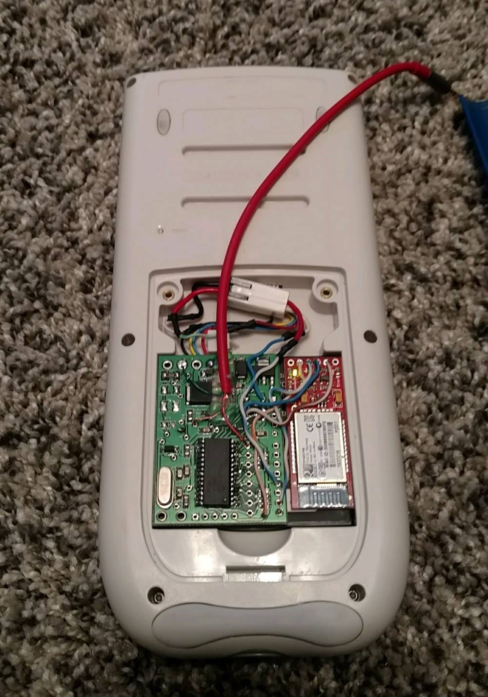

Calculator
April 2017 - October 2017
For some reason, in 2017, I had a spare Bluetooth module sitting around. The device could send data over Bluetooth that it receives over an RS232 port. I couldn't let it sit around, so I came up with a project to use the module.
I still don't know exactly how I came up with the idea, but the idea was to give my TI-84 calculator Bluetooth. Specifically, allow it to text using Bluetooth. It would connect to my phone and send texts by sending requests to the phone. There was no way to have the calculator talk directly to the Bluetooth module, so I needed an interface. There was also not much spare space in the calculator, so it needed to be small. I took one of my dad's spare circuit boards and modified it to my needs. It is basically just a micro on a small PCB with access to the micro's io ports. I hooked an extra connector onto the calculator's battery and plugged it in for power. To communicate with the TI-84, there were two ports. TI had no BASIC interface to use the USB or I/O ports for custom use, so I had to code in Z80 assembly. There was not much documentation on the USB port, so I decided to use the I/O port for communication. There were no implemented communication protocols in Z80 for the port, so I came up with my own similar to I2C. The communication was one way; calculator to interface.

Once the calculator to interface board communications was working, I had the interface board forward commands over Bluetooth to an android app. The app was pretty simple, just sent texts and listened to Bluetooth. The real challenge was learning how to implement a UI in assembly as I had little experience. Eventually, I got a simple black and white UI implemented where you can enter a phone number and a message. The calculator would tell the interface board, which would send it to the app over Bluetooth, which would send a text. I also added a signature to each text, "Sent from my calculator."
The main problem with the system was that it constantly drained power. When the Bluetooth module was on, it had LEDs lit and was discoverable. To use the device, I would have to plug it in and then unplug it when I was done. My solution was a special command to turn on and off power-saving mode in the interface device. When power saving was on, it would cut power to the Bluetooth module and then put the micro in sleep mode. The next command it receives temporarily wakes the micro to see if it is the exit power saving command.
Freshman year of college, I decided to revive the project for a Hackathon that was coming up. This time the communication would be two-way, and the goal would be to integrate wolfram alpha. Wolfram alpha is an online math solving tool that can interpret English requests. For example, the query "What is the derivative of sin(x)" would yield "cos(x)". I upgraded my communication protocol to be two-way, and my partner made the app and worked with wolfram's API. Overall the project was fairly easy since the hardware was completed. By the end of the day, we had the calculator integrating by parts.